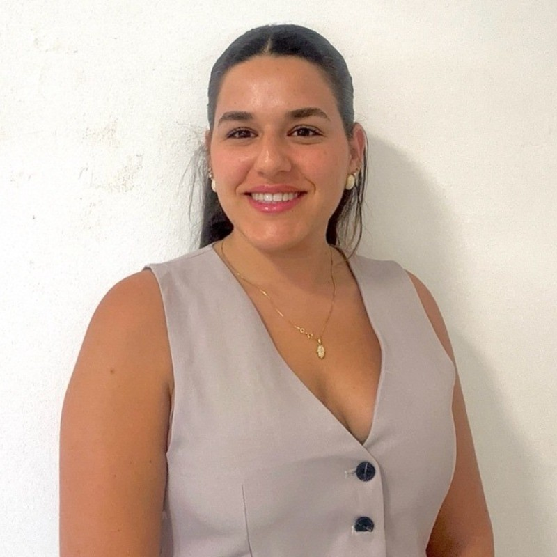

Industrial Engineering and Management student at Ben-Gurion University, with significant leadership experience as an officer in Unit 9900 of the IDF Intelligence Corps. Managed dozens of soldiers, led sensitive projects, and delivered professional training in technological and intelligence domains. Brings strong teamwork, leadership, and project management skills, advanced capabilities in data analysis and the operation of complex systems. Proficient in programming languages and databases, with a proven ability to thrive in dynamic, fast-paced environment, and multitask effectively.
Teaching Assistant for undergraduate students in process analysis and engineering, using tools such as operations research, queuing theory, and network theory. Specializes in teaching methods for optimizing production systems, resource planning, visualizing processes through flowcharts, and transforming raw data into actionable managerial insights. Emphasizes the practical application of mathematical models to solve real-world challenges.
Provided technical and functional support, and served as a system trainer for learning and development platforms within the Global HR department. Worked closely with international clients and stakeholders.